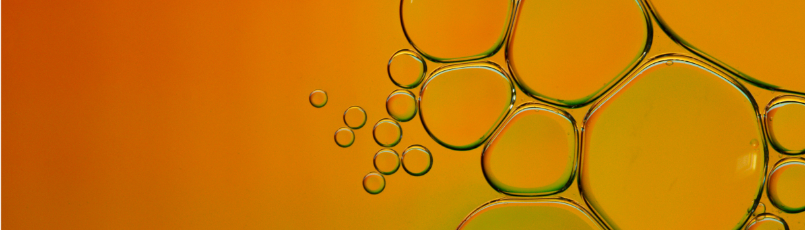

home > 사업소개 > 정밀화학
정밀화학
타이어 등 고무 제품의 안정성과 내구성을 높이는 고무 약품을 제공하고 있습니다
Antioxidants
산소나 오존이 고무와 반응하여 고분자 사슬을 절단하거나 가교화로 고무 노화를 촉진시키는 연쇄반응을 차단해주는 물질을 말합니다. 당사는 착색성이 있어 주로 타이어용 고무에 사용하는 방향족 아민계통과 제품 색상을 오염시키지 않는 페놀류 제품을 생산하고 있습니다.
용도
-
타이어
Tire -
합성수지
Synthetic
특징
- ① 방향족 아민계: 일광/Ozone균열 방지에 특히 효과가 좋고 굴곡균열 방지에도 유효함
- ② 페놀계: 분자량이 큰 비오염성 산화방지제 또는 1,2차 동시 산화방지제
Paint Additives/Diluent
Kumanox-3110, 3111 제품은 에폭시페인트 diluent 첨가제로서 기존 Nonylphenol이 갖고 있는 화학적 특징을 포함하며, NP의 위험성을 배제한 환경친화형 제품이다. 특히 경화촉진효과가 우수하고, 점도가 낮아 상용성이 우수한 장점이 있다.
용도
-
페인트
Paint -
경화제
Hardener
특징
- ① 점도가 낮아 작업성과, self-leveling 효과가 뛰어남
- ② 경화촉진 효과가 기존 제품보다 향상됨
- ③ NP-Free 제품으로 환경친화형 제품임